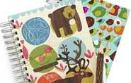

Drumlin Farm is committed to practicing sustainable agriculture and animal husbandry that provides quality food and farm products without stripping the land of its vitality.
Contact:
Matt Celona
781-259-2236
Farm Products
When in season, we sell fresh-picked produce, pesto, eggs, flowers, maple syrup, meat, yarn and sheepskins. We have a pick-your-own raspberry, strawberry and pumpkin patch.
In May, we sell seedlings of heirloom tomatoes, basil, peppers, and eggplant.
Livestock
We raise sheep, goats, pigs, cattle and laying hens. All our animals are raised with plenty of space, fresh air, and without the use of any growth hormones or routine antibiotics. Meat selections will vary depending on the animals being raised at any given time.
What is a CSA?
Community Supported Agriculture (CSA) provides direct connections between farmers and their customers. Members know exactly where their food comes from and receive a whole season’s worth of fresh produce.
We offer two distinct CSA programs: our Summer CSA and our Winter CSA. Members receive a wide variety of fresh Drumlin Farm vegetables, plus weekly e-newsletters full of cooking tips, recipes, and information about our farm, farmers and farming practices.
Summer Share
We keep an open waitlist year-round for our Summer CSA program.
Summer CSA program details.
Please contact Greg Bodine with any questions or to be placed on the waitlist.
Winter Share
Winter shares are sold out!
For more information about our Winter CSA, please contact Greg Bodine.
Winter CSA program details.
2011/12 Distribution Dates:
November 10th, 17th
December 1st, 15th
January 5th, 19th
Feburary 2nd, 16th
The Mass Audobon Shop offers special discounts to Mass Audubon members (become a member). All proceeds go to support Mass Audubon.
December Hours
We are open 7 days a week in December from 10 am – 5 pm, except for the following:
- Saturday 12/24: 10am – 3pm
- Sunday 12/25: CLOSED
- Monday 12/26: CLOSED
- Saturday 12/31: 10am – 3pm
Browse Our Shop
The Audubon Shop has a wide variety of products that explain, identify, and celebrate the nature of Massachusetts.